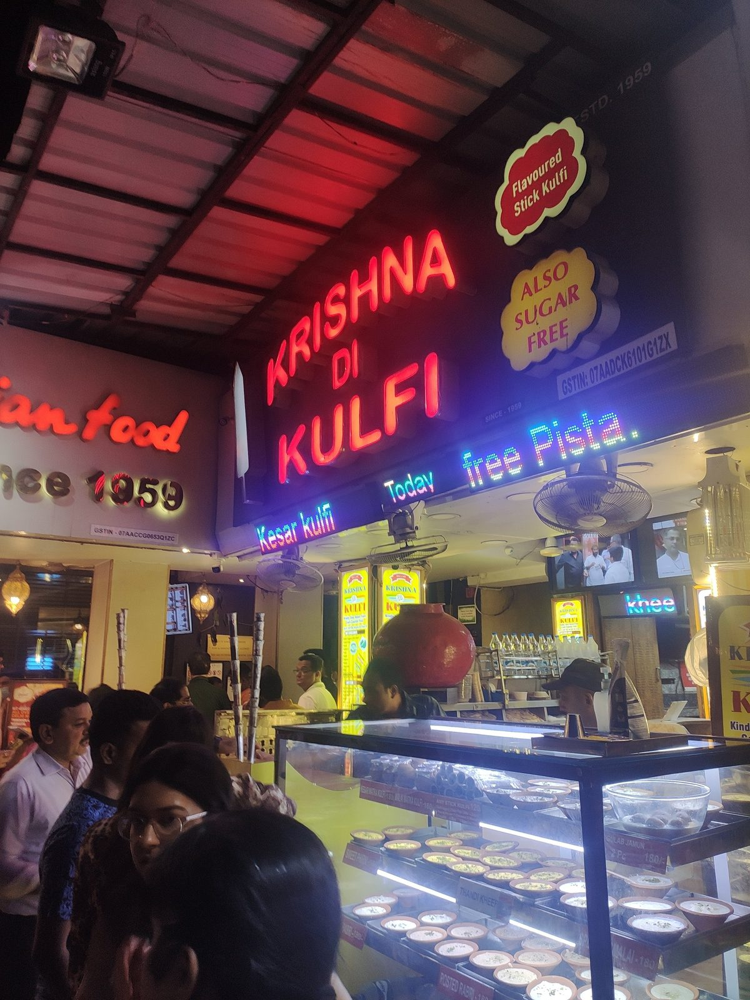
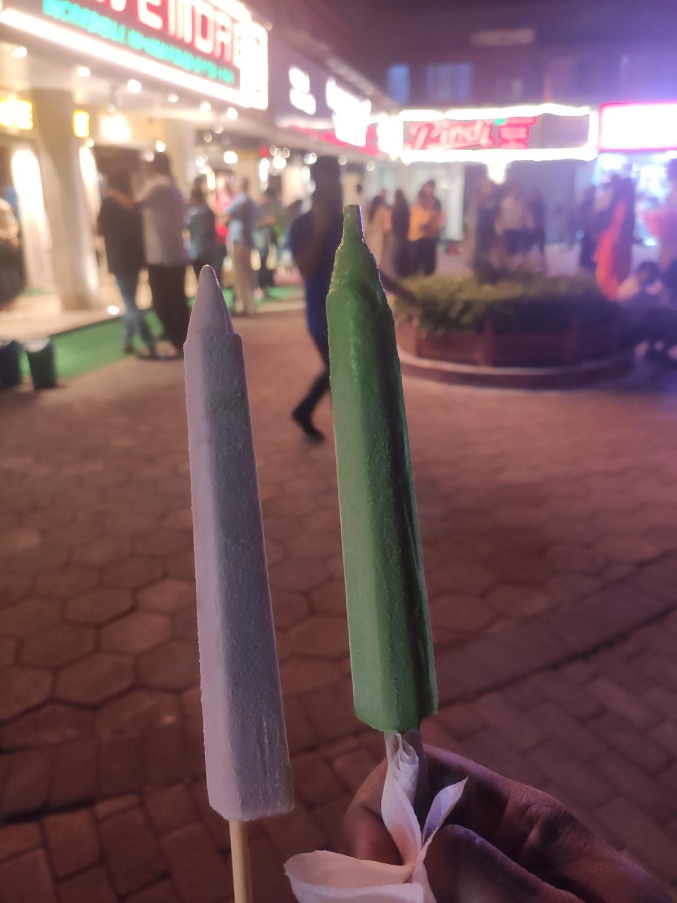
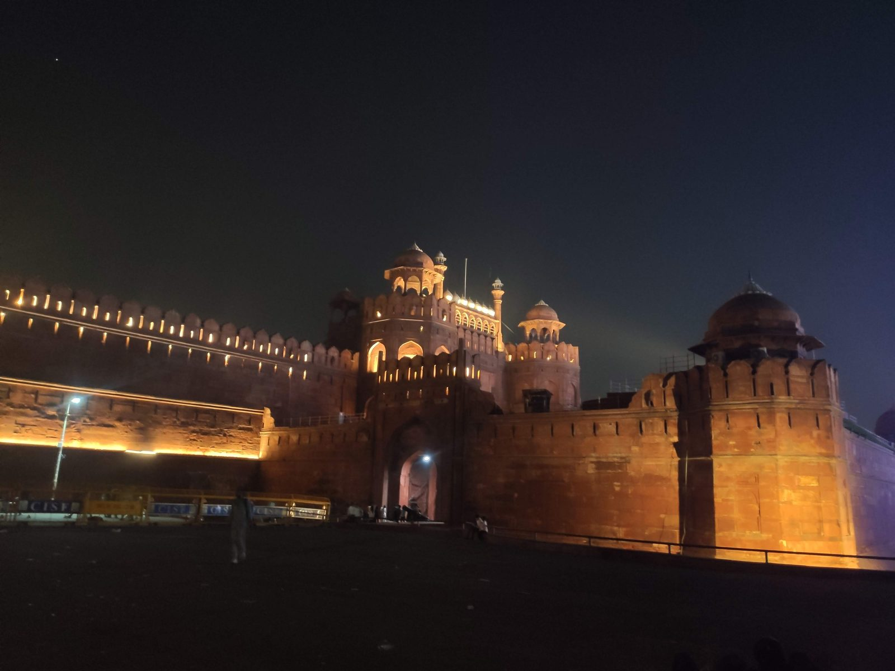
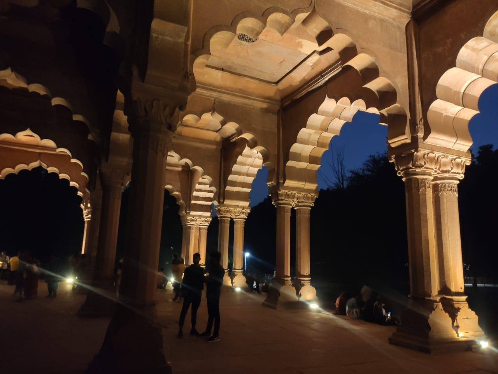
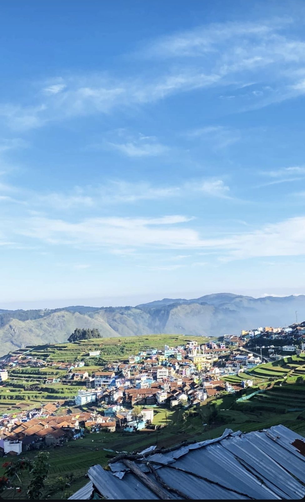
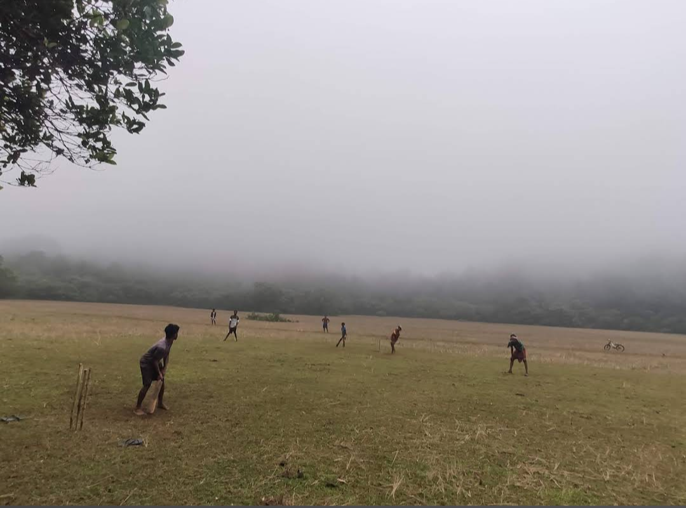
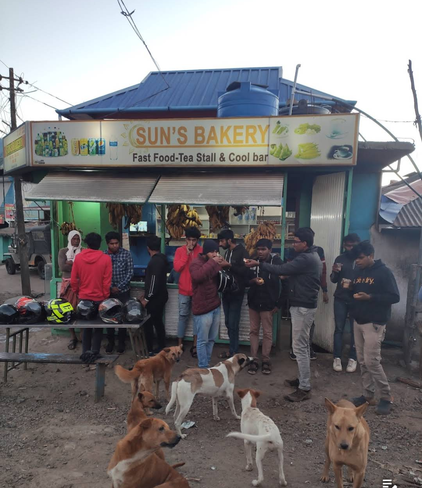
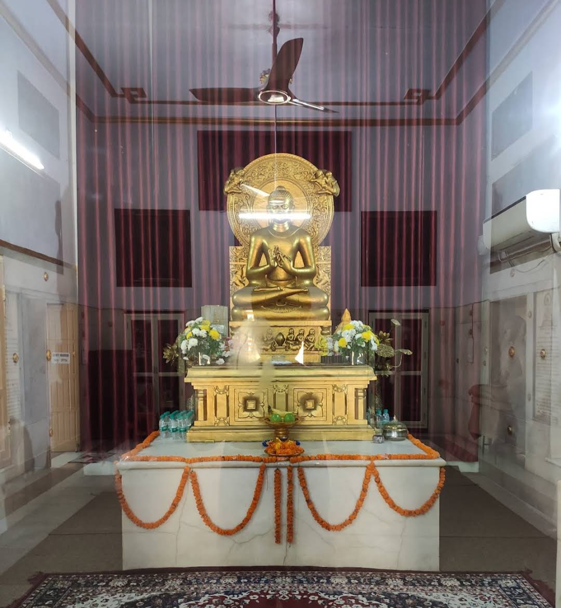

The capital, lit up
Delhi gave me India Gate glowing after dark, the Qutub Minar, the Red Fort and a handful of old tombs and temples in between.

Face to face with the Taj
Agra meant the Taj Mahal, and the red sandstone walls and arches around it.
Palace of a thousand pillars
In Mysore it was all about the palace: gold, glass and painted arches from end to end.
Life jackets on
On the Karnataka coast near Udupi: Malpe, and St Mary’s Island with its strange hexagonal basalt rocks.
Under Adiyogi
Coimbatore, and the giant Adiyogi statue.
Football above the clouds
Up in Kodaikanal with the gang: a kickabout on a hilltop, the valleys and mist spread out below.
Kerala’s hills
Then the green part of the map: Munnar, Kuttikkanam, Wayanad and Ranipuram. Bikes, tea slopes, forest swings, waterfalls and cliff edges.

Paddy fields and old Kerala
And down on the plains: paddy fields, palm-lined canals and old Kerala architecture.







